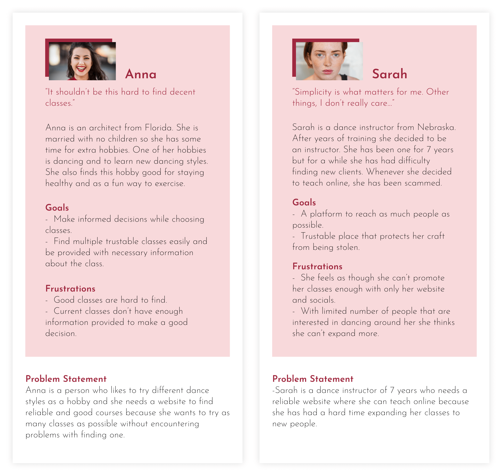
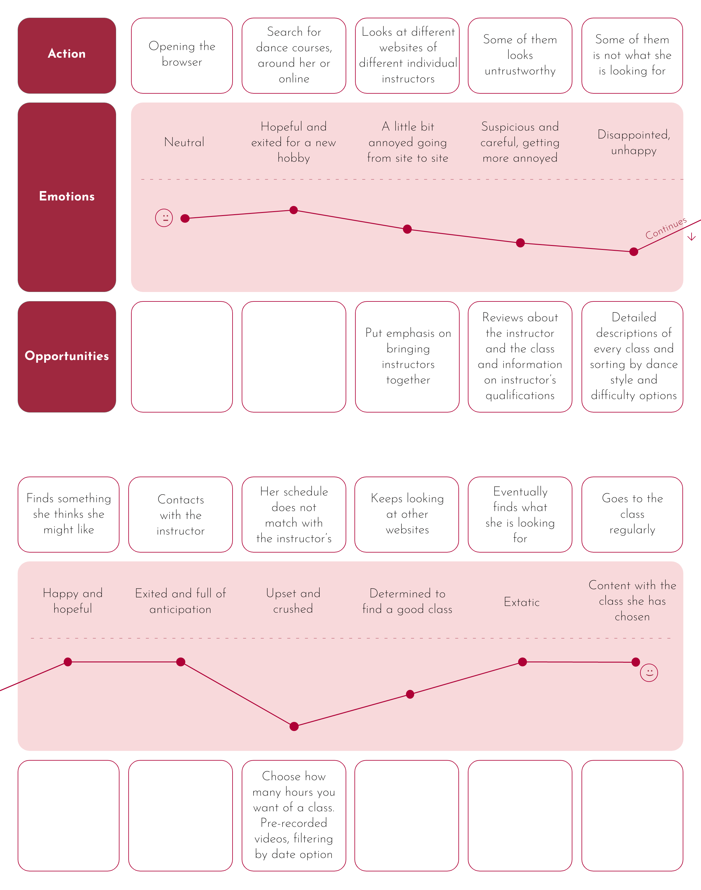
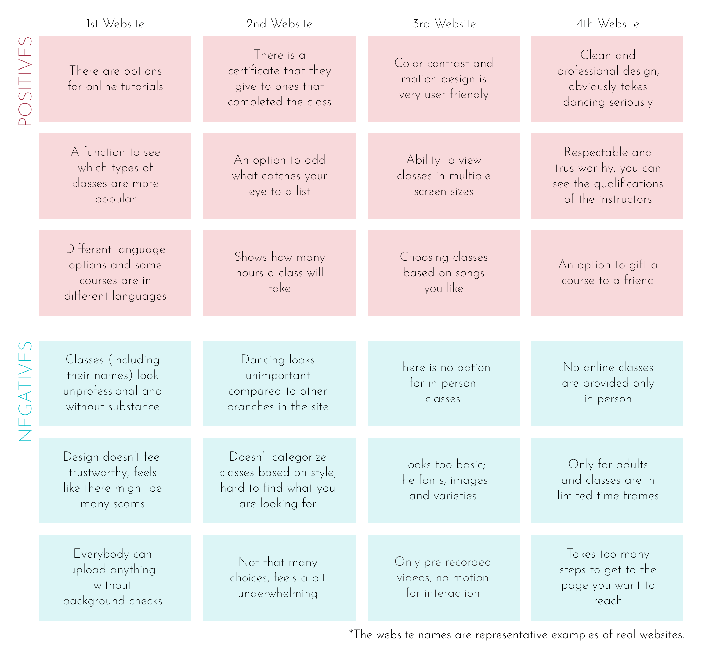
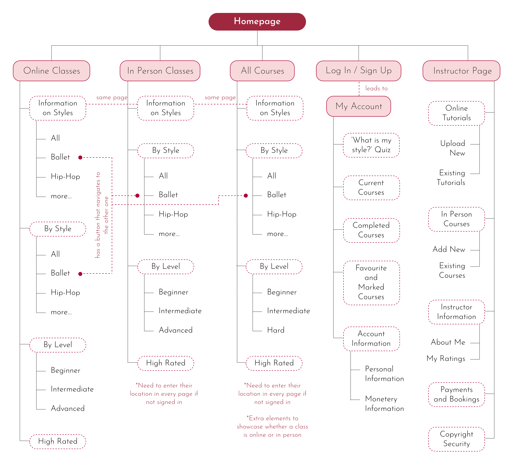
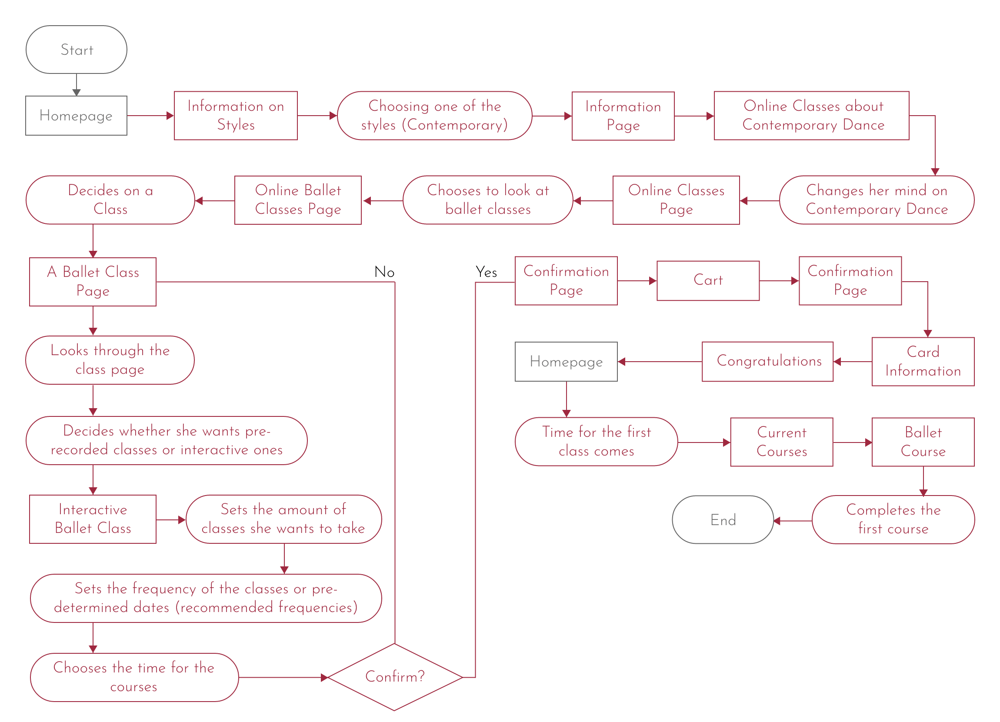
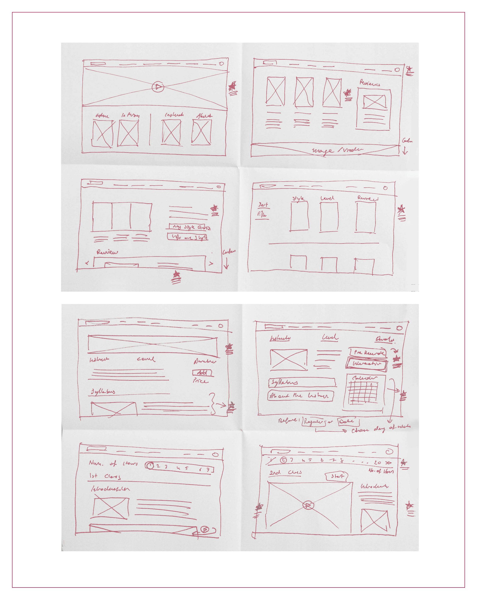
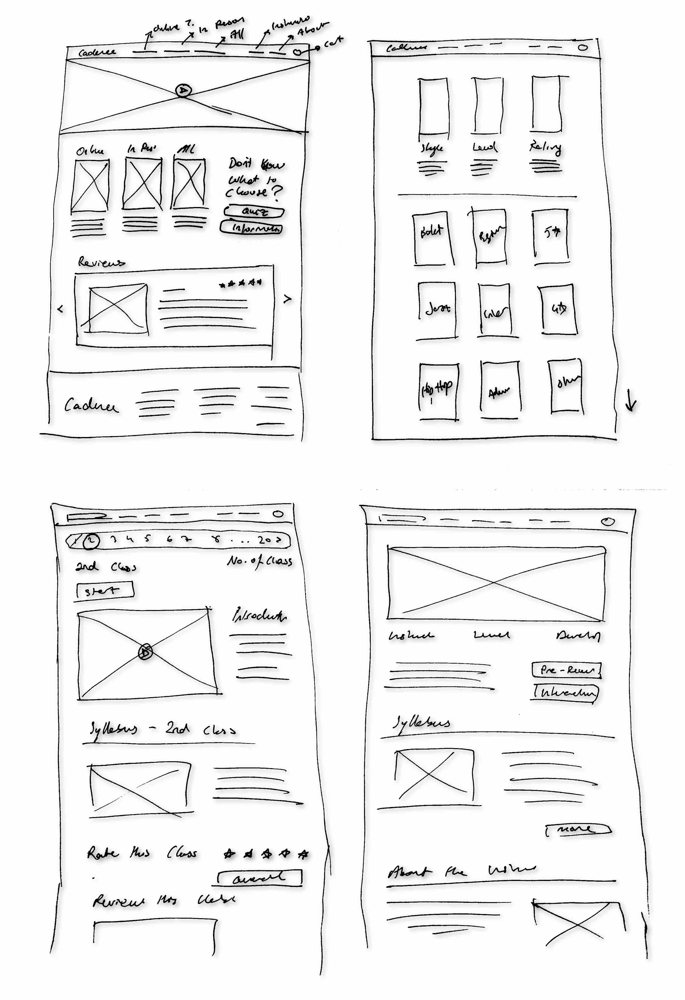
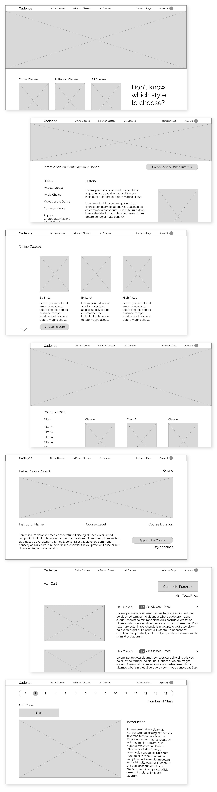
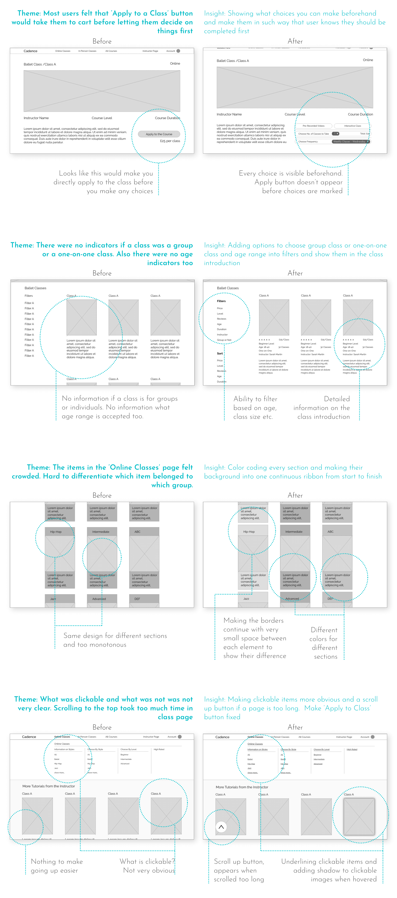
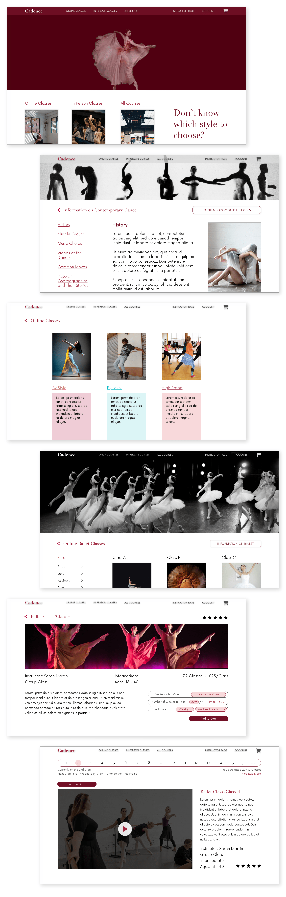

Cadence is a website that assists people in finding courses. It is specifically designed for dancers ranging from very beginners to advanced levels, and dance instructors. It brings together instructors and students, while providing options for both in-person and online classes.
UX designer designing an app from conception to delivery.
Conducting research, paper and digital wireframing, low and high-fidelity prototyping, conducting usability studies, and iterating on designs.
January-February 2023
It can be difficult to find reliable and high-quality dance courses on the internet because of the abundance of scammers, unprofessional instructors, and insufficient information about classes. Similarly, for instructors, it can be challenging to promote their classes to the right audience and attract the right students.
To design a website where dance students can come, learn about different types of dance styles, look through courses, choose what type of class they want, and attend online or in-person classes, safely. Also, a place where instructors can showcase their courses or conduct online classes
I have interviewed individuals who attend dance classes or take their children to such classes, as well as individuals who work as dance instructors. The main method they found classes or customers was through word of mouth, which is not the most efficient way. And they couldn't trust the internet due to a lack of a trustworthy platform with a broad range of course options.
The research concluded three main pain points:
- It was hard to find classes that matched their schedule.
- Finding high-quality courses was challenging, and trustworthy reviews were scarce.
- Instructors had problems finding students.
The core distinction between the people I interviewed was whether they were looking for a course or looking for students for their course. So, naturally, personas were built around this distinction.
The user journey map for Anna. She is looking for a dance course that will match her busy schedule. After some disappointing attempts, eventually, she finds a course to her liking.
Most other websites that are designed for a similar purpose were often very unprofessional and overly simplistic. The ones that were of high quality only offered classes from a single company. Therefore, the main issue was a lack of both quality and diversity.
The ideation process was highly productive and significantly improved the design of this project. From the sitemap to the crazy eights design, some of the best design features were brought to life in this section.
The classes are divided into two sections - online and in-person. This is because most people know what kind of class they are looking for. However, there is also an all-courses section for those who are unsure. The "Information on Styles" section is the same across all sections. There are buttons that connect related dance styles. For instance, on the ballet information page, there are buttons that lead to online and in-person ballet classes. Similarly, on the online ballet class page, there are buttons that lead to information about ballet and in-person classes. Instructors have a separate section to manage their classes.
The user flow for Anna includes learning about ballet, looking at the ballet classes, analysing a ballet class, choosing a class and purchasing the class. The idea of an interactive or pre-recorded online class was formed during this section.
I had an idea during the Crazy Eights exercise to add a large video of a person dancing to the homepage, covering about half of the page. This would instantly grab the attention of first-time users. Other ideas that came up were a quiz to help users discover their style, three main paths on the homepage, along with reviews. I also considered dividing classes further based on style, level, or reviews, adding a syllabus to class information and many other ideas. The Crazy Eights exercise proved to be very helpful in generating creative ideas for this project.
At this point, the website designs were refined and new ideas were integrated to enhance its usability and effectiveness. It was ensured that using the website would be convenient, informative, and logical. Images were used heavily for communicating information since the subject of this project is very visually heavy.
The sketches were essentially the cleaned-up and detailed versions of the four main frames from the crazy eights exercises. The navigation bar's layout has been established in this stage as well as some other details.
Wireframes required designing more frames. This meant adding more necessary features to the design. For example, the topics that would be mentioned in the style information pages were determined, as well as the ability to choose the number of classes to be purchased - for anybody who wasn't interested in paying the full price.
During this stage, additional wireframes were incorporated to create a comprehensive user flow. The process of selecting the number of classes to take and the details regarding how the selection of dates would function were enhanced. Users now have the option of choosing specific periods or days.
Through the testing process, I was able to identify and enhance areas that might have caused confusion in the future. Most participants were not instructors but individuals searching for classes, as they were more accessible and the website was a little bit more focused on their needs.
Changes were based on making the website more intuitive to use. This included making clickable texts more obvious, emphasising differences between sections that are meant to be different, and presenting more information to users before they take action.
In this stage, colors, fonts, images, and videos were chosen. Finding the perfect video for the homepage was a bit tedious, I wanted the video to not be too distracting but not too simple, and there was the issue of editing the video to match the colours of the website, but it all came together at the end.
I have selected the color red to be used on this website because it symbolizes energy, movement, and activity, which are all closely related to dancing. Pink has also been included in the color scheme for its association with elegance and grace. The images used on the website were carefully chosen to complement the overall context and color scheme. The headlines have been styled in a serif font, while the body text features a sans-serif font. This creates a balance between traditionality and modernism, much like dances today. It also highlights the differences between the two fonts.
 In the prototype, clickable images were highlighted when the mouse hovered over them to make the website feel more engaging. The scroll to the top button's functions was displayed.
The prototype visualizes some of the user flows in the following order:
- Looking at the general reviews,
- Learning information about contemporary dance,
- Looking at the offered contemporary classes,
- Looking at online classes and choosing ballet as the style,
- Choosing a ballet class by style and inspecting it,
- Adding the class to the cart and purchasing it,
- Joining the first course.
made by M. Dilara Özdemir
with love